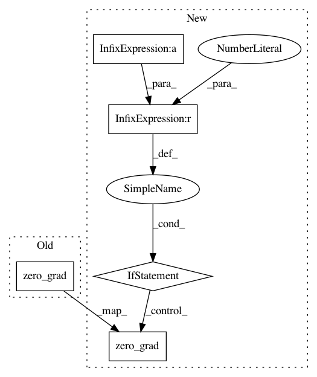

6e5da1ce274abf9d22815eac04ae6aa16a2209b8,train.py,,main,#Any#,30
Before Change
// accumulated_batches = 4 // accumulate gradient for 4 batches before stepping optimizer
// if ((i+1) % accumulated_batches == 0) or (i == len(dataloader) - 1):
optimizer.step()
optimizer.zero_grad()
// Compute running epoch-means of tracked metrics
ui += 1
metrics += model.losses["metrics"]
After Change
loss.backward()
accumulated_batches = 4 // accumulate gradient for 4 batches before stepping optimizer
if ((i+1) % accumulated_batches == 0) or (i == len(dataloader) - 1):
optimizer.step()
optimizer.zero_grad()
// Compute running epoch-means of tracked metrics
ui += 1
metrics += model.losses["metrics"]
TP, FP, FN = metrics
for key, val in model.losses.items():
In pattern: SUPERPATTERN
Frequency: 3
Non-data size: 5
Instances
Project Name: ultralytics/yolov3
Commit Name: 6e5da1ce274abf9d22815eac04ae6aa16a2209b8
Time: 2018-11-05
Author: glenn.jocher@ultralytics.com
File Name: train.py
Class Name:
Method Name: main
Project Name: inferno-pytorch/inferno
Commit Name: ed2a46e8c254dde364b760de8357ebf46fe392b6
Time: 2020-03-17
Author: valentyna.zinchenko@embl.de
File Name: inferno/trainers/basic.py
Class Name: Trainer
Method Name: train_for
Project Name: facebookresearch/Horizon
Commit Name: f42595df8d67f6164b779d41fd6be4bb989df9d1
Time: 2020-09-22
Author: czxttkl@fb.com
File Name: reagent/training/ranking/seq2slate_tf_trainer.py
Class Name: Seq2SlateTeacherForcingTrainer
Method Name: train